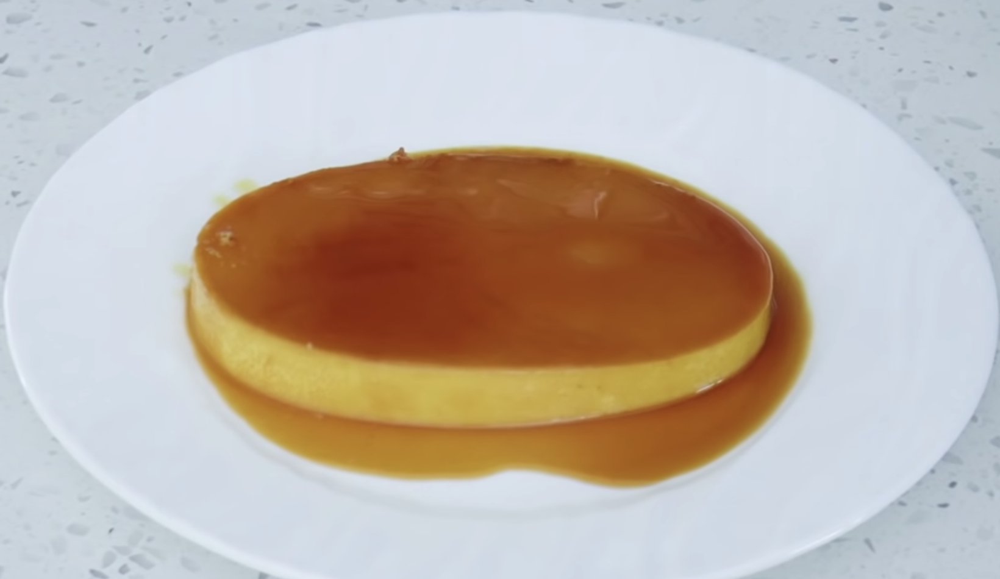

Filipino Flan

Description
Leche Flan is a dessert made-up of eggs and milk with a soft caramel on top. It resembles creme caramel and caramel custard.
Ingredients
- 10 eggs (yolk only)
- 1 can of condensed milk
- 1 teaspoon of vanilla extract
- 4 tablespoons of white sugar
- 1 8-inch oval non-stick cake pan or llanera
- 1 mixing bowl
- 1 bamboo steamer
- 1 pot
- Tin Foil
Steps
- Separate the 10 egg yolk into a single mixing bowl
- Add 1 teaspoon of vanilla extract and 1 can of condensed milk into the bowl
- Mix the 3 ingredients together until the texture of the bowl is smooth
- Add 4 tablespoons of white sugar onto the non-stick pan/llanera
- Put the pan/llanera on stove and turn the heat on high
- Wait until the sugar caramelizes and place to the side to cool and harden
- While waiting to for the sugar to caramelize and cooldown, boil a pot of water
- Pour the mixed ingredents from earlier into the sugar caramelized pan/llanera
- Wrap the pan/llanera with tin foil and place it inside the bamboo steamer
- Place the bamboo steamer on top of the boiling pot and wait between approximately 28-30 minutes
- Once time has passed, safely pull the final product out of the steamer and cool inside a refrigerator for 2-3 hours.
- Use a knife and cut along the edges of the pan/llanera, flip, and serve